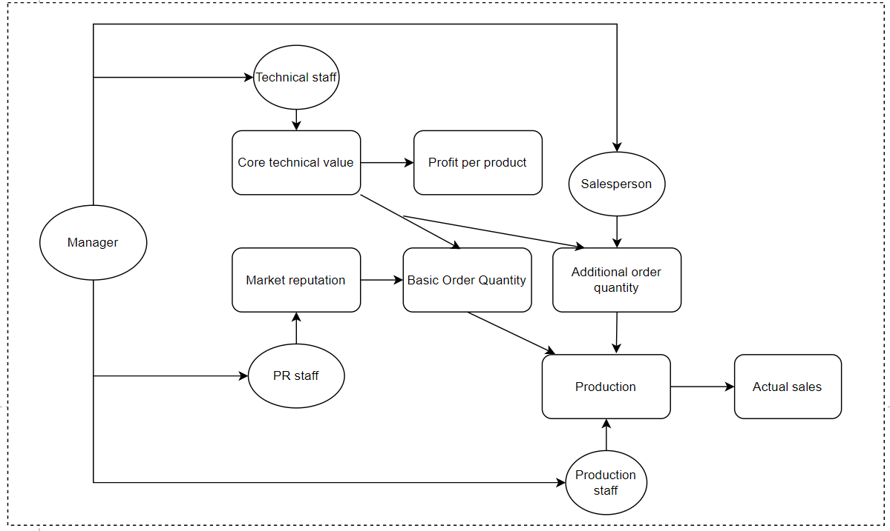

Building an Effective Team is a management game that tests how players coordinate the cooperation of various employees, thereby helping players improve their ability to form an efficient company team. A company usually contains at least five categories of people, including managers, technical developers, salespeople, publicists, and production personnel. Players take on the role of the founder of a company, striving to improve the company's market performance and economic returns by recruiting, managing, and optimizing team members, balancing the company's expenses with product revenue each round, and responding to changes in the external environment. With limited resources, players need to develop strategies and decisions to achieve the goals set by the game in the set round.
The goal of the game is to use the company's existing resources to adjust the size of team members and the proportion of various personnel, improve the company's operating efficiency, core technology, market reputation, sales and production, so as to maximize the company's revenue. Players need to constantly adjust their strategies to meet challenges and changes in the face of external circumstances, unexpected events and the increasing pressure of competitors, so that the company can achieve sustained success and growth. During the course of this game, the player can improve the following abilities.
1. Long-term planning and decision-making skills: In games, players need to develop strategies for team building and resource allocation to cope with different market challenges and changes. This can improve the player's strategic planning and decision-making skills, and develop the ability to make informed choices in complex environments.
2. Resource management and budget control: In the game, players need to manage a limited number of economy points and team members, conduct recruitment and payroll allocation, and manage other resources. This helps players develop good resource management and budget control skills, and learn how to use limited resources effectively to achieve the best results.
3. Team management and Leadership: Team members in a game have different abilities and influences, and players need to configure and manage teams to work together and maximize their effectiveness. This helps players develop team management and leadership skills, learn how to arrange team members, develop team potential, and coordinate team collaboration.
4. Innovation and problem solving skills: Players in the game need to deal with the changes and challenges of the external environment, such as government taxes, foreign sanctions, etc., a well-established team can vary. This builds innovation and problem solving skills, allowing players to learn how to deal with complex problems and find innovative solutions.
5. Market insight: In a game, players need to focus on core technology values, market reputation, sales and other factors, and develop appropriate marketing strategies to improve the company's market performance. This helps players develop market insight and marketing skills, learn to analyze market trends, develop marketing strategies, and enhance product competitiveness.
1. Each player starts the game with an executive, technician, salesperson, PR, and production staff, as well as 100 economy points. And randomly form different external environment.
2. Players can use economy points to continue recruiting different types of people, each with different hiring costs and salaries.
3. At the end of each turn, economic points are calculated and redistributed to players based on the number and abilities of team members.
4. Different types of team members have different abilities and influences:
5. External environmental factors such as government taxes, foreign sanctions and technological blockade will have an impact on a company's economic earnings.
6. The company's economic profit is affected by core technology value, market reputation, sales volume and production volume.
7. Core technology values affect product revenue and sales, and market word-of-mouth affects underlying sales and the probability of additional orders.
8. Sales volume determines the company's income, production volume determines the upper limit of sales, and backlog of orders will affect the market reputation.
9. Players need to develop strategies in the game to manage team members in accordance with different external circumstances and achieve the target revenue in as few turns as possible.
Management: Increase the overall efficiency of the team.
Technical personnel: responsible for improving the company's core technology
Sales: Determines the amount of additional orders the company receives each turn.
Public relations: To enhance consumer confidence, conducive to improving the basic order volume.
Production: Provide a fixed amount of product per turn.
Management: Recruitment costs 8 points, each round salary 4 points.
Each manager improves the efficiency of technical staff, sales and production by 10%. When the number of managers exceeds 10%, the efficiency of each manager decreases by 50%.
Technical personnel: Recruitment costs 10 points and wages 4 points per round.
Each technician has a 30% chance of providing the company with 5 core technical points per turn.
Sales staff: The cost of recruitment is 4 points, and the salary of each round is 2 points.
Each seller has a 50% chance of getting an order for 10 additional items per turn.
Public relations personnel: The recruitment cost is 4 points, and each round salary is 2 points.
Each PR affects the market reputation, each PR can reduce the impact of emergencies by 20%. For each additional PR person, their ability to reduce impact decreases by 5%.
Production personnel: The cost of recruitment is 6 points, and the salary of each round is 3 points.
Each production per turn for the company to provide 20 products.
1. Government taxes: the company's profits are reduced by 10% each round;
2. Foreign trade barriers: Reduce base order volume by 15% per turn
3. Technology lockdown: Increased cost of research (i.e., 6 points per technician)
Company accounting standard for economic income, economic income affected by various aspects:
1. Core technology value: the initial core technology value is 10, which affects the revenue of a single product and the sales situation.
2. Market word of mouth: The initial market word of mouth is 100, which affects the basic sales situation and the probability of sales staff getting additional orders.
3. Profit per product: 10% of the core technology value affected by the core technology value.
4. Basic order quantity: 10% of market reputation (rounded down), plus 10% of core technology value
5. Additional orders: affected by the number of sales personnel, and 10% of the core technology value
6. Production volume: determines the upper limit of sales. If the sales volume is greater than the production volume, there will be backlog of orders, and if the backlog of orders exceeds two rounds, the market reputation will be affected.
7. Actual sales volume: The actual sales volume is affected by the total volume of orders and restricted by the production volume. The actual sales volume of each round is capped by the production volume, and the part of the orders exceeding the production volume is the backlog order.
Actual sales × profit per product - (recruitment cost + employee salary)
Each player can write feedback and reviews based on the results of the game. Summarize some decisions made during the game and their impacts, and reflect on the impact of personnel structure on team efficiency under this scenario.
1. What a reasonable and efficient team composition should be.
2. What is the best order to hire team members?
3. What are the standards that need to be set in order to achieve the conditions that develop player ability?
4. In the face of different external environment, players need to make what strategy to adjust the personnel structure. You can give an example.